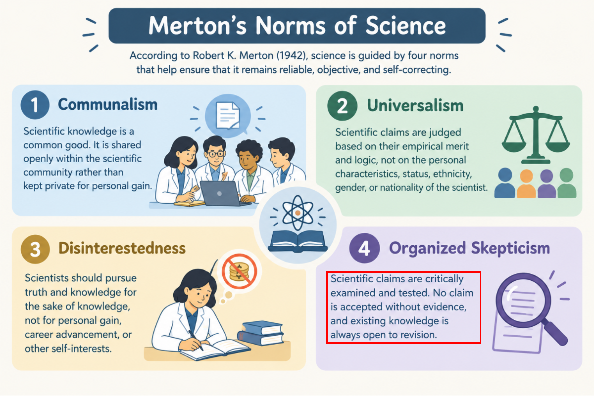
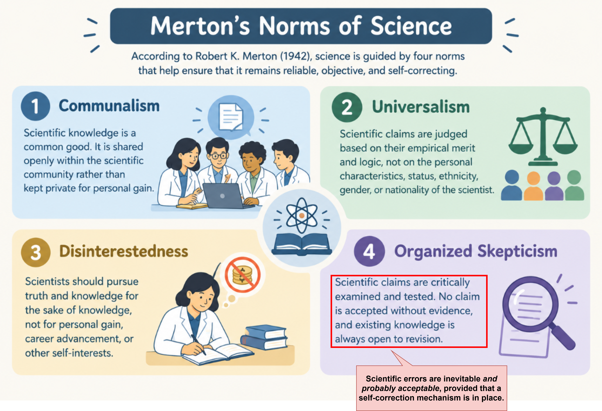
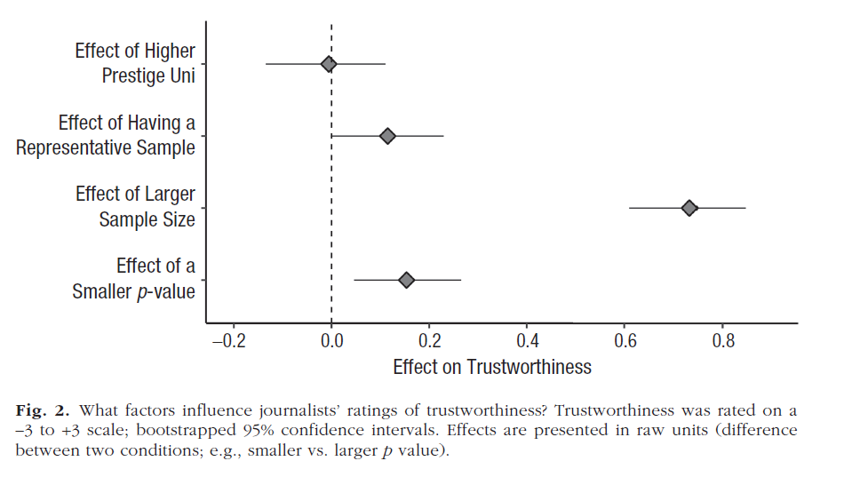

Research Data & Methods Team, Center for Advanced Internet Studies (CAIS)
Departemen Psikologi, Universitas Airlangga
SISJ Science Journalism Fellowship 2026
Rizqy Amelia Zein
2026-10-17
Perkenalan Metasains dan Sains Terbuka untuk Jurnalis
Menakar klaim ilmiah dan menulis tentang kesalahan sains
AGENDA
- Krisis Replikasi: Pengenalan Istilah, Bukti, dan Cakupannya
- Bagaimana Metasains Menyelidiki Cara Sains Mengoreksi Diri
- Checklist untuk Menakar Klaim Ilmiah Secara Cepat
- Menulis Liputan tentang “Kesalahan” dalam Sains: Membantu Publik Menakar Kepercayaannya
Kalung Anti-Corona

Sumber: Universitas Gadjah Mada
Ivermectin

Sumber: Badan Pengawas Obat dan Makanan
Dua Kasus “Scientific Error” Ketika Pandemi COVID-19
Juli 2020: kalung eucalyptus
Klaim Balitbang Kementan: kalung ini membunuh virus corona, “sudah diuji laboratorium”, siap diproduksi massal bersama PT Eagle Indo Pharma (Cap Lang). Padahal uji labnya memakai model virus corona lain, bukan SARS-CoV-2. Kemasannya bertuliskan “Anti Virus Corona”, tetapi izinnya di BPOM hanya sebagai jamu.
2021: ivermectin
Dipromosikan pejabat dan produsen sebagai terapi COVID-19; Menteri BUMN sempat menyebutnya sudah berizin edar untuk COVID-19. BPOM membantah: izin edar ivermectin hanya untuk penyakit akibat infeksi cacing, dan untuk COVID-19 baru sebatas uji klinik. Produsen Ivermax12 kemudian meminta maaf atas klaim yang berlebihan, dan produksinya dihentikan sementara.
Dalam kedua kasus ini, klarifikasinya baru datang setelah klaimnya menyebar luas.
Pertanyaan untuk Didiskusikan
Bayangkan Anda adalah seorang jurnalis yang ditugaskan meliput kedua kabar ini. Waktu dua klaim ini beredar, apa yang Anda cek sebelum menulis berita? Siapa yang Anda telepon untuk minta konfirmasi?
Diskusi pembuka, 5-10 menit – Hasil diskusi dicatat di dokumen kerja
01
Krisis Replikasi: Istilah, Bukti dan Cakupannya
Mari Kita Mulai dengan Sebuah Thought Experiment
Anda membaca sebuah temuan menarik di suatu jurnal top dan membayangkan paper ini akan Anda tulis menjadi suatu berita.
- Pertanyaan 1: Jika tim lain mencoba ulang studi yang sama dengan mengambil data baru, apakah mereka akan menemukan hasil yang sama?
- Pertanyaan 2: Jika Anda menganalisis ulang data asli dengan script/file analisis asli dari penelitian tersebut, apakah Anda akan mendapatkan hasil yang sama persis seperti yang dilaporkan dalam paper tersebut?
- Secara intuitif, banyak jurnalis berasumsi jawaban untuk keduanya adalah “ya, tentu saja! Paper ini, kan, sudah dipublikasikan di jurnal top Q1!” (Bottesini dkk., 2023)
- Selama 15 tahun terakhir, para peneliti benar-benar mengeceknya dan jawabannya… membuat banyak orang kecewa.
Tiga Istilah yang Sering Tertukar
Berdasarkan Barba (2018) dan The Turing Way, kebanyakan orang sering mencampuradukkan istilah-istilah ini:
Reproducibility (🇮🇩 “reka ulang”)
Data sama + analisis sama → hasil sama. Peneliti lain (atau tim peneliti yang sama) menjalankan ulang analisis yang sama, pada data yang sama, dan mendapatkan hasil yang sama persis seperti dilaporkan di artikel ilmiah. Resep dan bahan yang sama, dimasak ulang.
Replicability (🇮🇩 “coba ulang”)
Data baru + metode sama → hasil serupa. Tim peneliti independen mengulang studi tersebut dengan partisipan baru dan menemukan kesimpulan yang sebanding dengan penelitian aslinya. Resep yang sama, dimasak menggunakan bahan yang baru.
Robustness (🇮🇩 “keandalan”)
Data sama + analisis baru → hasil sama, atau setidaknya kesimpulan yang serupa. Temuan penelitian tetap stabil meskipun menggunakan strategi analitis yang berbeda. Resep dieksekusi dengan bahan yang sama, tetapi dengan teknik memasak yang berbeda.
Psikologi Sebagai Ground Zero, 2011
- 2011 — Artikel ilmiah tentang extrasensory perception dari Daryl Bem: sebuah jurnal prestisius (Journal of Personality and Social Psychology - JPSP) mempublikasikan bukti bahwa orang bisa merasakan apa yang akan terjadi di masa depan (Bem, 2011) dengan menggunakan metode eksperimen dan menguji hipotesisnya dengan tes statistik standar, dan menimbulkan kontroversi. Jika sebuah eksperimen sederhana bisa “membuktikan” hal yang mustahil, lalu untuk apa gunanya melakukan penelitian?
- 2011 — Kasus kecurangan akademik Diederik Stapel: seorang profesor psikologi sosial yang dulunya dihormati terbukti memalsukan data di puluhan paper yang sudah dipublikasikan.
- 2011 — “False-Positive Psychology” (Simmons, Nelson, & Simonsohn): menunjukkan bahwa pilihan-pilihan analitis yang kesannya remeh dan biasa, tetapi tidak diungkapkan bisa membuat apa pun menjadi signifikan secara statistik. Di paper ini, mereka menunjukkan betapa mudahnya “membuktikan” bahwa mendengarkan sebuah lagu yang spesifik (“When I’m 64”) membuat orang merasa lebih muda.
- Peristiwa-peristiwa ini memicu pertanyaan besar di komunitas Psikologi: seberapa banyak klaim ilmiah di literatur Psikologi yang benar-benar bisa dipercaya?
Komunitas Psikologi saat itu memang yang paling dinamis responnya (di media sosial) terhadap krisis replikasi, tetapi bukan satu-satunya disiplin ilmu yang memiliki masalah ini.
Hasil Coba Ulang
Berapa banyak klaim ilmiah yang terkonfirmasi saat studinya dicoba ulang dengan data baru?
36%
dari 100 studi psikologi (Open Science Collaboration, 2015)
46%
dari 112 klaim ilmiah (dari 50 eksperimen yang diterbitkan di 23 artikel) di biologi kanker praklinis (Errington dkk., 2021). Awalnya merencanakan coba ulang 193 eksperimen dari 53 paper dengan impact factor yang tinggi (2010–2012), tetapi hanya 50 eksperimen dari 23 paper yang bisa dikerjakan.
61%
dari 18 eksperimen laboratorium ekonomi (Camerer dkk., 2016)
49%
dari 164 paper di 12 disiplin di ilmu sosial dan perilaku (Tyner, et al., 2026)
- Bahkan ketika temuannya berhasil dicoba ulang, rata-rata effect sizenya hanya sekitar setengah dari yang dilaporkan pada awalnya (dikenal sebagai “The Decline Effect”) — SCORE menemukan pola yang sama lagi pada 2026.
- SCORE adalah riset coba ulang terbesar sejauh ini: 865 peneliti menilai 3.900 paper (2009–2018, 62 jurnal, mencakup ekonomi, psikologi, ilmu politik, sosiologi, dan lainnya). Dari 164 artikel yang dipilih acak (berisi 274 klaim) yang dicoba ulang dengan data baru, hanya 49% yang menghasilkan efek signifikan dengan pola yang sama. Median effect size turun dari r = 0.25 menjadi 0.10.
- Karena pola masalah ini terkonfirmasi dalam skala besar, bahwa apa yang disebut media sebagai “krisis replikasi” memang benar-benar terjadi.
Apa Kata Para Peneliti?
Nature menyurvei 1.576 peneliti dari berbagai disiplin ilmu (Baker, 2016).
>70%
pernah gagal mencoba ulang eksperimen peneliti lain
>50%
pernah gagal mencoba ulang eksperimen mereka sendiri
~90%
menganggap ada krisis replikasi
Bahkan Direka Ulang Pun Sulit
Mari lupakan proses coba ulang yang membutuhkan data baru. Bisakah klaim ilmiah direka ulang dari data dan material aslinya?
22/67
artikel di bidang ekonomi yang diterbitkan di 13 jurnal terkemuka bisa direka ulang tanpa menghubungi penulis (Chang & Li, 2015)
11/35
artikel yang diterbitkan di jurnal Cognition, yang mewajibkan data terbuka, bisa direka ulang tanpa bantuan penulis aslinya (Hardwicke dkk., 2018)
1/14
artikel yang memiliki badge open data di Psychological Science bisa direka ulang persis sama (Crüwell dkk., 2023)
54%
dari 143 klaim ilmiah di ilmu sosial dan perilaku bisa direka ulang persis sama dari data dan material riset aslinya (Miske, dkk., 2026)
Kesalahan yang “Tampaknya Kecil” dengan Konsekuensi yang Besar
- Reinhart & Rogoff menerbitkan artikel “Growth in a Time of Debt” pada tahun 2010.
- Kesimpulannya: negara dengan utang publik di atas 90% PDB tumbuh jauh lebih lambat, rata-rata −0,1% per tahun, kemudian dikutip untuk menjustifikasi kebijakan austerity di banyak negara setelah krisis 2008, utamanya di Uni Eropa.
- Ada kesalahan di file Excel-nya, yang baru ketahuan saat seorang mahasiswa pascasarjana mendapat spreadsheet aslinya (Herndon dkk., 2014).
- Sebagian negara dan data di tahun tertentu dihapus secara selektif, pembobotan negara yang cenderung subjektif, dan kesalahan formula di Excel yang membuang sebagian negara dari rata-rata.
- Setelah dikoreksi, pertumbuhan rata-rata negara dengan utang di atas 90% PDB adalah sekitar 2,2%, bukan −0,1%.
Ini bukan kasus satu-satunya - sekitar separuh artikel ilmiah psikologi diketahui memuat minimal satu informasi statistik yang tidak konsisten (Nuijten dkk., 2016).
Mengapa Krisis Ini Bisa Terjadi?
Umumnya, bukan semata-mata karena niat jahat/kecurangan, tetapi respon naluriah manusia yang mengikuti bagaimana sistem insentif bekerja.
- Publication bias: jurnal cenderung hanya mempublikasi temuan baru yang sesuai prediksi teori, sehingga hasil null/negatif cenderung ditolak untuk diterbitkan.
- Publish or perish: karier akademik bergantung dan dihitung dari jumlah publikasi.
- Questionable research practices (QRP): praktik-praktik penelitian yang berada di wilayah abu-abu antara keputusan metodologis yang dibenarkan/sahih dengan pemalsuan data. Di antaranya, p-hacking, HARKing, pelaporan selektif (John dkk., 2012).
- Peer review belum tentu menjadi jaminan kualitas.
- Reviewer membaca naskah dan jarang mengulang proses analisisnya.
- Tidak dibayar, dikerjakan di sela pekerjaan lain, biasanya oleh dua atau tiga orang.
- Bisa mendeteksi kesalahan yang tampak jelas di naskah, tapi tidak dirancang untuk mendeteksi kesalahan yang mengendap dalam siklus penelitian.
- Tanpa hadirnya niat jahat pun, suatu dataset memungkinkan peneliti untuk mengambil berbagai variasi rangkaian keputusan analisis yang sama-sama masuk akal secara metodologis (Gelman & Loken, 2014).
Pertanyaan untuk Didiskusikan
Setelah Anda mengetahui ada banyak sekali ketidakpastian, masalah, dan kesalahan yang melekat pada cara kerja sains dan ilmuwan, masihkah sains layak dipercaya?
Diskusi kedua, 5-10 menit – Hasil diskusi dicatat di dokumen kerja
02
Cara Sains Mengoreksi Diri
Apa Itu Metasains?
Research on research: menggunakan metode ilmiah untuk memeriksa apakah sains bekerja sebagaimana mestinya.
- Seberapa sering klaim ilmiah bertahan saat diuji ulang peneliti yang lain?
- Praktik apa yang membuat klaim ilmiah rentan mengalami kekeliruan/kesalahan?
- Bagaimana mengungkap bias yang melekat pada ilmuwan dan bagaimana mengatasinya?
- Bagaimana dinamika proses sosial mempengaruhi cara kerja sains (e.g., peer review; alokasi sumberdaya seperti research grant; sistem rekrutmen, pendidikan & pelatihan, dan tata kelola sumber daya penelitian, dsb.)?
Mengapa Metasains Penting?

Sumber: Merton (1942). Ilustrasi dibuat dengan GPT-6.
Mengapa Metasains Penting?

Sumber: Merton (1942). Ilustrasi dibuat dengan GPT-6.
Mengapa Metasains Penting?

Sumber: Merton (1942). Ilustrasi dibuat dengan GPT-6.
Apa yang Membuat Resep Masakan Memungkinkan Direcook?

Sumber: Devina Hermawan Official Website
Praktik Sains Terbuka dengan Analogi Memasak
Kalau mencari resep di internet, apa yang membuat Anda yakin bisa merecook masakah tersebut?
Pre-registration
Resep ditulis dan diberi stempel waktu sebelum memasak: hipotesis, desain, rencana analisis (Nosek dkk., 2018).
Data dan kode terbuka
Bahan dan takarannya dideskripsikan secara detail dan transparan - tidak ada “resep rahasia”, sehingga orang lain bisa memverifikasi klaim ilmiah yang disajikan dalam artikel.
Registered Reports (Chambers, 2013)
Resep dinilai reviewer sebelum dimasak. Editor berkomitmen akan menerbitkan artikelnya apa pun hasil penelitiannya. Lebih dari 300 jurnal dari berbagai disiplin mengadopsi model publikasi ini.
Apakah Praktik Sains Terbuka Ada Dampaknya?
Registered Reports
Dampaknya: hanya 44% RR melaporkan hipotesis yang didukung data, dibanding 96% artikel biasa (Scheel dkk., 2021). Reviewer menganggap RR memiliki keketatan metolodogis dan secara umum, menghasilkan artikel ilmiah dengan kualitas yang lebih baik daripada artikel ilmiah biasa (Soderberg dkk., 2021).
Tapi: jumlahnya masih sedikit, dan tidak semua jenis desain penelitian cocok dengan format ini.
Pre-registration
Dampaknya: studi yang di-preregister memiliki statistical power (i.e., peluang mendeteksi efek, kalau efek tsb. benar-benar ada di populasi) dan memiliki ukuran sampel lebih besar (van den Akker dkk., 2024).
Tapi: proporsi hasil positif dan effect size-nya tidak berbeda dari studi biasa. Dari 27 studi di Psychological Science, 25 menyimpang dari pre-registration yang sudah ditulis dan hanya satu yang mengungkapkan semua penyimpangannya (Claesen dkk., 2021).
Kewajiban data dan kode terbuka
Dampaknya: 1️⃣ Setelah jurnal Cognition mewajibkan data terbuka, artikel dengan data availability statement naik dari 25% menjadi 78% (Hardwicke dkk., 2018). 2️⃣ Di The BMJ dan PLOS Medicine, yang mewajibkan penulis untuk membagikan datanya secara terbuka, data uji klinis tersedia untuk 17 dari 37 studi yang dipilih acak, tetapi hanya 14 (dari 17 studi) di antaranya bisa direka ulang penuh (Naudet dkk., 2018). 3️⃣ Dari 204 artikel (dipilih acak) yang diterbitkan jurnal Science, yang sejak 2011 mewajibkan data terbuka, hanya 44% artikel yang datanya benar-benar tersedia dan 26%nya bisa direka ulang (Stodden, dkk., 2018).
Tapi: data dan material yang dibagikan belum tentu bisa diverifikasi dan direka ulang.
Ketiganya mengubah perilaku ilmuwan, tetapi hanya sejauh adanya keterlibatan yang pihak lain yang melakukan verifikasi.
Batasan Praktik Sains Terbuka
- Praktik sains terbuka membuat kesalahan menjadi visible sehingga memungkinkan untuk dideteksi ilmuwan lain.
- Tetapi, praktik ini tidak didesain untuk mencegah kesalahan yang disertai niat jahat (i.e., kecurangan akademik seperti pemalsuan data, dsb).
- Praktik sains terbuka berorientasi untuk mengubah perilaku ilmuwan di level individual.
- Padahal, penyebab sistemik (e.g., insentif, tata kelola sumber daya manusia, dan sistem publikasi ilmiah) juga punya andil penting.
- Praktik ini mendorong ilmuwan untuk lebih transparan, tetapi transparansi hanya bermakna kalau proses verifikasi juga dilakukan.
- Insentif untuk inovasi dan koreksi idealnya setara, tetapi realitanya, insentif bagi ilmuwan untuk mengkoreksi kesalahan jauh lebih kecil daripada menghasilkan inovasi.
- Sudah mulai ada upaya untuk memperbaiki hal ini (e.g., CTRL-Z Award), tetapi belum menjadi arus utama.
Contoh Kasus: Anomali dalam Data vs. Metadata Artikel
Kasus Dan Ariely: anomali di dalam data
Kasusnya: Studi 2 dalam Ariely & Wertenbroch (2002), Psychological Science, tentang tenggat waktu dan prokrastinasi. Datanya diduga direkayasa.
Cara mengungkapnya: Data Colada membandingkan file dataset asli dengan data replikasi yang gagal. Ditemukan effect size sebesar d = 2,5, 18 dari 20 peserta dalam satu kondisi punya skor identik (e.g., ditengarai data difabrikasi dengan menduplikasi skor), dan data durasi waktu yang (janggalnya) terlalu spesifik, hampir tidak pernah dibulatkan.
Dampak investigasinya: kedua penulis meminta paper diretraksi (ditarik dari penerbitan); editor masih memprosesnya.
Jaring.id: anomali di jejak kepenulisan (i.e., metadata artikel ilmiah)
Kasusnya: co-author fiktif, nama peneliti asing dicatut, dan slot penulis yang dijual paper mill di sejumlah kampus Indonesia (Jaring.id dkk., 2024). Polanya sistematis, terkait dengan “jalan pintas” mengakali syarat kenaikan jabatan.
Cara mengungkapnya: jurnalis investigasi menelusuri Retraction Watch Database, PubPeer, Scopus, PDDikti, grup jual-beli artikel di media sosial, dan wawancara.
Dampak investigasinya: sanksi etik bagi ilmuwan yang artikelnya bermasalah; kebijakan kolaborasi baru di Universitas Multimedia Nusantara; beberapa jurnal meretraksi artikel yang bermasalah.
Kasus pertama terbongkar karena datanya tersedia untuk diperiksa ulang, sedangkan kasus kedua terbongkar karena jejak metadata artikelnya bisa ditelusuri di internet.
Pertanyaan untuk Didiskusikan
Setelah membaca detail kasus Dan Ariely dan investigasi Jaring.id, mengapa butuh waktu jauh lebih lama untuk mengungkap (dugaan) kecurangan akademik yang dilakukan Dan Ariely dengan para ilmuwan Indonesia yang diungkap Jaring.id?
Diskusi ketiga, 5-10 menit – Hasil diskusi dicatat di dokumen kerja
03
Checklist untuk Menakar Klaim Ilmiah
Strategi Apa yang Dipakai Jurnalis Sains?
Bottesini dkk. (2023) melakukan penelitian pada 181 jurnalis sains lewat eksperimen yang hipotesisnya sudah dipre-register.
- Partisipan menilai delapan ringkasan studi psikologi fiktif.
- Empat hal diacak: ukuran sampel, keterwakilan sampel, nilai p, prestise universitas peneliti.
- Yang diukur: persepsi partisipan bahwa hasil studi tsb. dapat dipercaya, dan seberapa layak hasil studi tsb. diangkat sebagai berita.
Menurut Anda, dari empat aspek yang diacak tersebut, manakah yang punya kontribusi paling besar menjelaskan penilaian jurnalis?
Hasilnya
Ukuran sampel adalah prediktor terkuat yang menjelaskan penilaian jurnalis tentang seberapa besar suatu klaim ilmiah dapat dipercaya.

Sumber: Bottesini dkk. (2023)
- Di pertanyaan terbuka, banyak peserta menyebut satu praktik verifikasi yang umum mereka lakukan: mewawancarai pakar lain yang tidak terlibat dalam studi itu.
- Aspek lain yang disebut berkaitan dengan penilaian jurnalis: prestise jurnal, desain eksperimen vs. penelitian korelasional, status peer review, sumber dana, kesesuaian klaim dengan bukti.
Checklist: Empat Pertanyaan
Dapat diaplikasikan secara cepat pada suatu artikel ilmiah atau rilis pers yang memuat suatu klaim ilmiah.
1. Bagaimana status artikelnya?
Apakah artikel ilmiahnya berupa preprint, sudah peer-reviewed, atau baru rilis pers (lihat perbedaannya di sini)? Apakah klaim di rilis pers sama dengan klaim di paper-nya?
2. Apakah eksekusi penelitiannya memadai untuk klaimnya?
Apakah desainnya eksperimen atau penelitian korelasional? Apakah ukuran sampelnya sebanding dengan besarnya klaim? Apakah data dan material risetnya dapat diakses terbuka?
3. Apakah ada tanda kesalahan yang jelas terlihat?
Cek apakah ada anomali pada angka, gambar, dan pola kepenulisan (lebih detail di slide berikutnya).
4. Apakah ada pihak yang memverifikasi?
Hubungi pakar independen yang tidak terlibat di studi itu (wajib) untuk dimintai verifikasi awal. Siapa yang membiayai studinya? Pernahkah studinya dicoba ulang?
Dua Jalur Mendeteksi Kesalahan
Jalur pertama butuh keterampilan statistik dasar, tetapi jalur kedua cukup dengan ketelitian.
Jalur statistik
✅ Apakah nilai p yang dilaporkan sangat mendekati 0,05?
✅ Apakah effect size yang dilaporkan wajar atau terlalu besar dibandingkan studi serupa di disiplin ilmu tersebut (Studi 2 Ariely: d = 2,5, yang mana terlalu besar untuk studi psikologi pada umumnya)?
✅ Apakah ada data duplikat/kembar atau terlalu rapi di tabel data (Studi 2 Ariely: 18 dari 20 peserta punya data yang sama/duplikat)?
Jalur metadata
✅ Apakah ada kejanggalan pada teks dan gambar di artikel? Misalnya, ada gambar yang diduplikasi, tortured phrase, penggunaan AI yang tidak dideklarasikan, referensi fiktif
✅ Apakah pola kolaborasi tim penelitinya masuk akal? Kalau ada kejanggalan, umumnya ini ciri khas artikel produksi paper mill.
✅ Apakah ada riwayat retraksi penulis atau jurnalnya di basis data terbuka?
✅ Kalau ada riwayat retraksi, apa penyebab/alasan retraksinya?
Toolkit yang Bisa Dimanfaatkan
- Retraction Watch Database: untuk mengecek riwayat retraksi penulis atau jurnal.
- PubPeer: untuk melakukan tinjauan sejawat pasca-publikasi dari peneliti lain, sering digunakan untuk melaporkan kesalahan dalam artikel yang sudah diterbitkan.
- statcheck: untuk mengecek konsistensi hasil statistik yang dilaporkan.
- imagetwin: untuk mengecek duplikasi dan manipulasi gambar di artikel penelitian.
- Citely: platform untuk mengecek otentisitas referensi yang dikutip.
Prestise Jurnal Bukan Jaminan
Jurnalis di studi Bottesini dkk. (2023) tidak melihat prestise universitas sebagai faktor yang mempengaruhi penilaian mereka, tapi banyak yang mengandalkan prestise jurnal tempat terbitnya artikel.
- Makin tinggi impact factor jurnal, makin sering artikelnya diretraksi (Fang & Casadevall, 2011)
- Dari 21 eksperimen ilmu sosial di Nature dan Science, hanya 13 yang berhasil direplikasi, dengan effect size rata-rata sekitar separuh dari aslinya (Camerer dkk., 2018).
- Padahal, Nature dan Science adalah dua jurnal yang paling bergengsi di kalangan ilmuwan.
- Impact factor dan kuartil jurnal (Q1–Q4) mengukur rata-rata berapa kali artikel-artikel dalam jurnal tersebut dikutip, bukan mutu artikel yang diterbitkan.
- Sitasi pun umumnya ditopang oleh sedikit artikel yang sangat sering dikutip (Seglen, 1997)
- Artikel Dan Ariely terbit di Psychological Science, yang dianggap sangat bergengsi di kalangan ilmuwan psikologi; sebagian artikel paper mill yang dibongkar Jaring.id terbit di jurnal terindeks Scopus, yang dianggap bergengsi di kalangan ilmuwan Indonesia.
- Oleh karena itu, beberapa ilmuwan menyimpulkan bahwa menggunakan prestise jurnal sebagai indikator kualitas riset adalah bentuk bad scientific practices (Brembs dkk., 2013).
04
Menulis Liputan tentang “Kesalahan” dalam Sains: Membantu Publik Menakar Kepercayaannya
Peran Jurnalis (dan Komunikator) Sains Sangat Penting
Schapals dkk. (2026) memetakan berbagai aktor yang “mengawasi” sains sebagai watchdog, mulai jurnalis sains investigasi sampai scientific sleuth di PubPeer. Ada banyak peran penting yang tidak bisa dilakukan ilmuwan.
- Mendorong perhatian publik dan mempercepat koreksi literatur ilmiah.
- Investigasi Brian Deer di Sunday Times pada tahun 2009 berkontribusi pada retraksi artikel Andrew Wakefield (yang mengklaim keterkaitan vaksin MMR dengan autisme) dari The Lancet pada 2010.
- Investigasi Catherine Offord, jurnalis The Scientist, mengungkap skandal Surgisphere yang mengklaim efektivitas hydroxychloroquine untuk mencegah risiko kematian akibat COVID-19, yang diamplifikasi Donald Trump. Artikelnya diretraksi The Lancet bulan Juli 2020.
- Investigasi Dyna Rochmyaningsih, yang terbit di Science tentang masalah etika penelitian yang dilakukan pada suku Bajau, memantik diskusi tentang kepastian prosedur administratif dan keadilan epistemik dalam penelitian yang dilakukan peneliti asing dan melibatkan komunitas adat.
Peran Jurnalis (dan Komunikator) Sains Sangat Penting
Schapals dkk. (2026) memetakan berbagai aktor yang “mengawasi” sains sebagai watchdog, mulai jurnalis sains investigasi sampai scientific sleuth di PubPeer. Ada banyak peran penting yang tidak bisa dilakukan ilmuwan.
- Menerjemahkan implikasi kesalahan teknis untuk publik: platform seperti PubPeer, statcheck, dan ImageTwin mendeteksi dan mendokumentasikan masalah dan kesalahan, tetapi hanya dipahami terbatas di kalangan ilmuwan.
- Jurnalis sains memiliki perlindungan hukum dan infrastruktur sosial yang tidak dimiliki scientific sleuth atau whistleblower perorangan.
- Memisahkan kritik berbasis bukti dari pihak anti-sains yang juga mengklaim “membongkar” kebohongan ilmuwan.
- Mengisi celah di negara yang infrastruktur integritas risetnya lemah: Plagio SOS di Amerika Latin, India Research Watch, Selisik Integritas Akademik (kolaborasi Jaring.id, Tempo, dan The Conversation Indonesia) dan ScienceWatchdog di Indonesia.
Risiko yang Harus Dimitigasi
Tujuan liputan: pembaca memercayai klaim ilmiah yang proporsional dengan kekuatan buktinya.
- Risiko 1️⃣: Percaya berlebihan
- Klaim ilmiah yang lemah diberitakan bombastis, seperti kalung eucalyptus dan ivermectin.
- Risiko 2️⃣: Ketidakpercayaan yang melebar
- Pembaca memiliki persepsi yang melompat, dari “satu kasus kesalahan/kecurangan” ke “sains seluruhnya tidak bisa dipercaya”.
Mengungkap kesalahan/kecurangan dalam sains amat diperlukan, mengingat dana publik, kebijakan, dan keputusan klinis yang dapat berdampak luas di masyarakat umumnya dijustifikasi dengan klaim ilmiah. Tetapi pertanyaannya, bagaimana agar kedua risiko di atas diminimalisasi?
Layak Diberitakan?
Tidak semua kasus kesalahan/kecurangan/retraksi layak jadi berita. Charles Piller merangkum empat pertanyaan yang dapat diajukan jurnalis untuk menentukan news value.
- Apakah kasus tersebut memiliki implikasi yang lebih luas? Implikasi tersebut antara lain: implikasi bagi penelitian di bidang tersebut; aplikasi klinis atau medis; atau implikasi kebijakan
- Apakah kasus ini menunjukkan sesuatu tentang cara kerja sains?
- Apakah pihak yang terlibat dalam kasus ini punya pengaruh besar atau memiliki posisi dengan kewenangan tertentu?
- Apakah kasusnya cukup janggal atau sangat keterlaluan sehingga harus diberitakan?
Arahkan Kritik ke Sasaran yang Tepat
Yang keliru selalu pihak tertentu yang spesifik: peneliti, institusi, jurnal, atau kebijakan. Bukan “sains secara umum”.
Hindari
- “Penelitian menunjukkan…”
- “Para ilmuwan ternyata keliru”
- “Dunia akademik kita bobrok”
Pertimbangkan
- “Studi Ariely & Wertenbroch (2002) di Psychological Science menunjukkan…”
- “Data Studi 2 diduga direkayasa; jurnal sedang memproses retraksinya”
- “Syarat publikasi Scopus untuk kenaikan jabatan mendorong jual-beli slot penulis”
Dengan menyebut pihak yang spesifik, seperti peneliti, institusi, jurnal, dan kebijakan, maka pihak-pihak ini dapat ditagih akuntabilitasnya.
Memberitakan Kesalahan Dapat Dibingkai Sebagai Mekanisme Koreksi Diri
- Artikel diretraksi merupakan indikasi bahwa ada proses verifikasi, ada masalah yang diidentifikasi, dan ada respon dari sistem koreksi diri ini.
- Responsnya sering lambat: artikel Andrew Wakefield terbit pada tahun 1998, tetapi baru ditarik The Lancet pada tahun 2010.
- Justru, jarangnya retraksi terjadi di suatu bidang belum tentu kabar baik: bisa jadi kesalahannya tetap ada, tetapi tidak ada yang memeriksa dan menemukannya.
- Sebut nama pemeriksa/verifikatornya hanya dengan persetujuan mereka: sebagian bekerja anonim karena posisinya rentan retaliasi.
Ketepatan Bahasa
Kelima jenis kasus ini perlu dibedakan dan dideskripsikan secara eksplisit, agar isi liputannya proporsional.
- Fabrikasi/falsifikasi data: data dikarang atau dimanipulasi dengan sengaja disertai niat jahat, tetapi ini kasus yang relatif jarang terjadi.
- Kecurangan publikasi: jual-beli slot penulis, paper mill, penulis fiktif, plagiat, publikasi ganda oleh penulis; di Indonesia, kasusnya lumayan sering, dan umumnya digerakkan oleh motivasi untuk mencari jalan pintas meraih insentif.
- Questionable Research Practice (QRP): jalan pintas metodologis yang berada di wilayah abu-abu, bisa jadi tanpa disertai niat jahat.
- Honest error: salah ketik, salah prosedur, salah hitung; bisa terjadi pada peneliti yang sangat hati-hati.
- Retraksi tanpa indikasi kecurangan akademik: artikel terbit dua kali karena kesalahan penerbit, ada masalah pada metadata artikel.
Kalau ragu, tanyakan: apa alasan resmi retraksinya ke redaksi jurnal, dan siapa yang mengajukannya?
Selalu Sampaikan Angka Penyebutnya
“Lebih dari 10.000 artikel ilmiah diretraksi di tahun 2023, rekor tertinggi sepanjang sejarah” terdengar mengerikan. Dari berapa artikel yang terbit, dan dari mana asalnya?
0.2%
artikel yang terbit pada 2022 akhirnya ditarik, atau sekitar 1 dari 500
8.000+
dari 10.000 retraksi itu berasal dari satu penerbit (Hindawi), sebagian besar dari special issue
Sumber: Van Noorden (2023), Nature, 624, 479–481.
Sebelum Terbit
Praktik dari investigasi yang direkomendasikan Charles Piller dan Van Noorden.
- Kirim semua temuan ke pihak yang diinvestigasi dalam satu email, bisa dalam bentuk no-surprise email.
- Beri waktu yang cukup bagi pihak tersebut merespons.
- Tegaskan bahwa tidak merespons tidak akan menghentikan publikasi.
- Selalu verifikasi klaim sumber secara independen, termasuk sumber yang identitasnya Anda lindungi.
Tutup dengan Akuntabilitas
Berita yang berhenti di deskripsi soal skandalnya berisiko menimbulkan sinisme. Minimalisasi risiko ini dengan menutup liputan dengan apa yang sudah berubah, atau apa yang belum.
Hindari
- Berhenti di “artikelnya diduga hasil paper mill”
- “Kasus ini mencoreng nama baik peneliti Indonesia”
Pertimbangkan
- “Universitas menjatuhkan sanksi etik dan membuat aturan baru untuk kolaborasi internasional”
- “Frontiers menarik empat artikel dari dua penulis yang disorot liputan ini”
- “Redaksi Psychological Science masih memproses retraksinya”
Pertanyaan “lalu apa yang dilakukan institusinya?” sering menjadi bagian terpenting dari liputan. Apabila belum ada tindakan sama sekalik pun tetap layak diberitakan.
Toolkit yang Menjadi Bekal Anda
Cek cepat newsworthiness dan kualitas klaim ilmiah
Gunakan checklist sebelum memutuskan meliput sebuah temuan penelitian.
Trust, but verify (Pawar, 2022)
Selalu cek silang dengan mewawancarai pakar independen, di setiap liputan.
Sebutkan verifikatornya
Selalu sebut siapa yang menemukan masalahnya (kalau mereka bersedia disebut), supaya pembaca tahu dari mana koreksinya datang.
Kesimpulan
Sains tidak bebas dari kesalahan. Yang membuatnya layak dipercaya adalah adanya prosedur dan sistem untuk memeriksa dan memperbaikinya.
- Krisis replikasi memang terjadi. Banyak temuan, termasuk yang terbit di jurnal top, tidak bertahan saat dicoba ulang. Sebagian bahkan tidak bisa direka ulang dari data aslinya.
- Sains terbuka membantu, tapi ada batasnya. Pre-registration, Registered Reports, dan data terbuka mengubah perilaku peneliti sejauh ada yang memeriksanya. Tetapi, ketiganya tidak menghentikan kecurangan akademik yang disertai dengan niat jahat.
- Prestise bukan ukuran mutu. Cek status publikasi artikel ilmiah, desain dan ukuran sampelnya, tanda-tanda kesalahan, dan tanyakan pendapat pakar yang independen.
- Beritakan kesalahan secara proporsional. Arahkan kritik ke sasaran yang tepat, pakai istilah yang tepat, sertakan angka penyebut, dan tutup dengan tindakan apa yang dilakukan, atau kebijakan apa yang berubah.
Referensi
Artikel ilmiah dan laporan riset
- Baker, M. (2016). 1,500 scientists lift the lid on reproducibility. Nature, 533(7604), 452–454.
- Barba, L. A. (2018). Terminologies for reproducible research. arXiv, 1802.03311.
- Bem, D. J. (2011). Feeling the future: Experimental evidence for anomalous retroactive influences on cognition and affect. Journal of Personality and Social Psychology, 100(3), 407–425.
- Bottesini, J. G., Aschwanden, C., Rhemtulla, M., & Vazire, S. (2023). How do science journalists evaluate psychology research? Advances in Methods and Practices in Psychological Science, 6(3).
- Brembs, B., Button, K., & Munafò, M. (2013). Deep impact: Unintended consequences of journal rank. Frontiers in Human Neuroscience, 7, 291.
- Camerer, C. F., dkk. (2016). Evaluating replicability of laboratory experiments in economics. Science, 351(6280), 1433–1436.
- Camerer, C. F., dkk. (2018). Evaluating the replicability of social science experiments in Nature and Science between 2010 and 2015. Nature Human Behaviour, 2(9), 637–644.
- Chambers, C. D. (2013). Registered Reports: A new publishing initiative at Cortex. Cortex, 49(3), 609–610.
- Chang, A. C., & Li, P. (2015). Is economics research replicable? Sixty published papers from thirteen journals say “usually not”. Finance and Economics Discussion Series, 2015-083. Federal Reserve Board.
- Claesen, A., Gomes, S., Tuerlinckx, F., & Vanpaemel, W. (2021). Comparing dream to reality: An assessment of adherence of the first generation of preregistered studies. Royal Society Open Science, 8(10), 211037.
- Crüwell, S., dkk. (2023). What’s in a badge? A computational reproducibility investigation of the open data badge policy in one issue of Psychological Science. Psychological Science, 34(4), 512–522.
- Errington, T. M., dkk. (2021). Investigating the replicability of preclinical cancer biology. eLife, 10, e71601.
- Fanelli, D. (2013). Why growing retractions are (mostly) a good sign. PLoS Medicine, 10(12), e1001563.
- Fang, F. C., & Casadevall, A. (2011). Retracted science and the retraction index. Infection and Immunity, 79(10), 3855–3859.
- Fang, F. C., Steen, R. G., & Casadevall, A. (2012). Misconduct accounts for the majority of retracted scientific publications. PNAS, 109(42), 17028–17033.
- Gelman, A., & Loken, E. (2014). The garden of forking paths [naskah tidak terbit]. Columbia University.
- Hardwicke, T. E., dkk. (2018). Data availability, reusability, and analytic reproducibility: Evaluating the impact of a mandatory open data policy at the journal Cognition. Royal Society Open Science, 5(8), 180448.
- Herndon, T., Ash, M., & Pollin, R. (2014). Does high public debt consistently stifle economic growth? A critique of Reinhart and Rogoff. Cambridge Journal of Economics, 38(2), 257–279.
- John, L. K., Loewenstein, G., & Prelec, D. (2012). Measuring the prevalence of questionable research practices with incentives for truth telling. Psychological Science, 23(5), 524–532.
- Merton, R. K. (1973). The normative structure of science. Dalam The sociology of science (hlm. 267–278). University of Chicago Press. (Karya asli terbit 1942)
- Miske, O., dkk. (2026). Investigating the reproducibility of the social and behavioural sciences. Nature, 652(8108), 126–134.
- Naudet, F., dkk. (2018). Data sharing and reanalysis of randomized controlled trials in leading biomedical journals with a full data sharing policy: Survey of studies published in The BMJ and PLOS Medicine. BMJ, 360, k400.
- Nielsen, M., & Qiu, K. (2022). A vision of metascience: An engine of improvement for the social processes of science. Science++.
- Nosek, B. A., Ebersole, C. R., DeHaven, A. C., & Mellor, D. T. (2018). The preregistration revolution. PNAS, 115(11), 2600–2606.
- Nuijten, M. B., Hartgerink, C. H. J., van Assen, M. A. L. M., Epskamp, S., & Wicherts, J. M. (2016). The prevalence of statistical reporting errors in psychology (1985–2013). Behavior Research Methods, 48(4), 1205–1226.
- Open Science Collaboration. (2015). Estimating the reproducibility of psychological science. Science, 349(6251), aac4716.
- Pietschnig, J., Siegel, M., Eder, J. S. N., & Gittler, G. (2019). Effect declines are systematic, strong, and ubiquitous: A meta-meta-analysis of the decline effect in intelligence research. Frontiers in Psychology, 10, 2874.
- Reinhart, C. M., & Rogoff, K. S. (2010). Growth in a time of debt (NBER Working Paper No. 15639). National Bureau of Economic Research.
- Schapals, A. K., Riedlinger, M., Montaña-Niño, S., & Rednikin, A. (2026). Shining light on “dark science”: Mapping the field of science watchdog journalism. Media and Communication, 14.
- Scheel, A. M., Schijen, M. R. M. J., & Lakens, D. (2021). An excess of positive results: Comparing the standard psychology literature with Registered Reports. Advances in Methods and Practices in Psychological Science, 4(2).
- Seglen, P. O. (1997). Why the impact factor of journals should not be used for evaluating research. BMJ, 314(7079), 497.
- Serghiou, S., Marton, R. M., & Ioannidis, J. P. A. (2021). Media and social media attention to retracted articles according to Altmetric. PLOS ONE, 16(5), e0248625.
- Simmons, J. P., Nelson, L. D., & Simonsohn, U. (2011). False-positive psychology: Undisclosed flexibility in data collection and analysis allows presenting anything as significant. Psychological Science, 22(11), 1359–1366.
- Soderberg, C. K., dkk. (2021). Initial evidence of research quality of registered reports compared with the standard publishing model. Nature Human Behaviour, 5(8), 990–997.
- Stodden, V., Seiler, J., & Ma, Z. (2018). An empirical analysis of journal policy effectiveness for computational reproducibility. PNAS, 115(11), 2584–2589.
- Tyner, A. H., dkk. (2026). Investigating the replicability of the social and behavioural sciences. Nature, 652(8108), 143–150.
- van den Akker, O. R., dkk. (2024). Preregistration in practice: A comparison of preregistered and non-preregistered studies in psychology. Behavior Research Methods, 56(6), 5424–5433.
- Vazire, S., & Holcombe, A. O. (2022). Where are the self-correcting mechanisms in science? Review of General Psychology, 26(2), 212–223.
Investigasi, berita, dan sumber daring
- Bhattacharjee, Y. (2013, 26 April). The mind of a con man. The New York Times Magazine.
- Center for Open Science. (2026). Large-scale collaboration releases new findings on research credibility [rilis pers SCORE].
- Data Colada. (2026, 31 Agustus). [138] Artificial deadlines (part 1): Evidence of fraud in an influential study about procrastination.
- Else, H. (2021). ‘Tortured phrases’ give away fabricated research papers. Nature, 596(7872), 328–329.
- Jones, N. (2026). Half of social-science studies fail replication test in years-long project. Nature.
- Mehra, M. R., Desai, S. S., Ruschitzka, F., & Patel, A. N. (2020). Retraction—Hydroxychloroquine or chloroquine with or without a macrolide for treatment of COVID-19: A multinational registry analysis. The Lancet, 395(10240), 1820.
- Pawar, P. (2022, 31 Mei). Reporting on retractions. The Open Notebook.
- Pickett, M. (2018, 11 Desember). How to conduct difficult interviews. The Open Notebook.
- Rochmyaningsih, D. (2018, 27 Juli). Did a study of Indonesian people who spend most of their days under water violate ethical rules? Science.
- ScienceWatchdog.id. (2025, 18 Oktober). The rise of scientific sleuths: Ensuring research integrity.
- Somad, A., dkk. (2024, 22 April). Main catut nama sampai daur ulang artikel ilmiah. Jaring.id, kolaborasi dengan Tempo dan The Conversation Indonesia.
- The Center for Scientific Integrity. (2026, 4 Agustus). 2026 winners of the CTRL-Z Award for courage in retracting one’s own work.
- Van Noorden, R. (2023). More than 10,000 research papers were retracted in 2023 — a new record. Nature, 624(7992), 479–481.
- Zein, R. A. (2018, 16 November). Efek kobra, dosen Indonesia terobsesi pada indeks Scopus dan praktik tercela menuju universitas kelas dunia. The Conversation Indonesia.
- Zein, R. A. (2024, 15 Mei). Mengenal cara kerja ‘paper mill’: Pabrik artikel ilmiah yang beroperasi seperti kartel di film-film. The Conversation Indonesia.
- Kasus Wakefield dan Surgisphere: wawancara Brian Deer di The Times (arsip); liputan Catherine Offord di The Scientist; linimasa ABC News tentang hydroxychloroquine
- Kasus Reinhart & Rogoff: The Conversation (2013); Business Insider (2018)
- Kasus kalung eucalyptus: UGM; Bisnis.com (2020); iNews
- Kasus ivermectin: BPOM; CNN Indonesia (2021); Antara Jabar; Kabar24 (2021)
- Kasus suku Bajau: liputan Science (2018) tentang studi adaptasi penyelam Bajau
- Profil jurnalis: Charles Piller, Richard Van Noorden
Regulasi, basis data, dan alat
- Peraturan Menteri Pendidikan, Kebudayaan, Riset, dan Teknologi Nomor 39 Tahun 2021 tentang Integritas Akademik dalam Menghasilkan Karya Ilmiah.
- Retraction Watch Database, PubPeer, statcheck, Academ-AI, Citely, ImageTwin
- Pengawas integritas riset: Plagio SOS (Amerika Latin), India Research Watch, Selisik Integritas Akademik (Jaring.id, Tempo, The Conversation Indonesia), ScienceWatchdog.id
- Center for Open Science: Registered Reports dan Open Science Badges
- PUBLISSO: preprint dan postprint
- The Turing Way untuk istilah reproducibility dan praktiknya
Dr. Rizqy Amelia Zein
Center for Advanced Internet Studies (CAIS) & Universitas Airlangga
E-mail: amelia.zein@cais-research.de or amelia.zein@psikologi.unair.ac.id · Homepage: rameliaz.github.io


Terima kasih!
Center for Advanced Internet Studies (CAIS) gGmbH
Konrad-Zuse-Str. 2a, 44801 Bochum
info@cais-research.de
+49 234 9531 5000
www.cais-research.de

Pengantar Metasains | Zein | SISJ Fellowship 2026